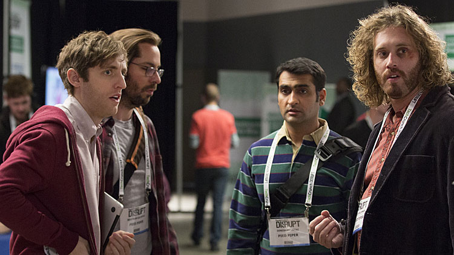
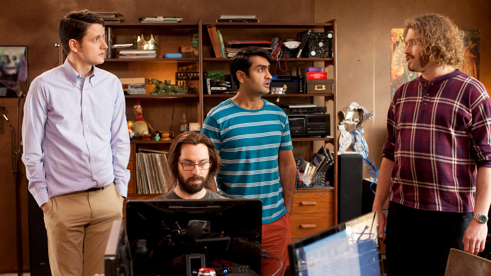
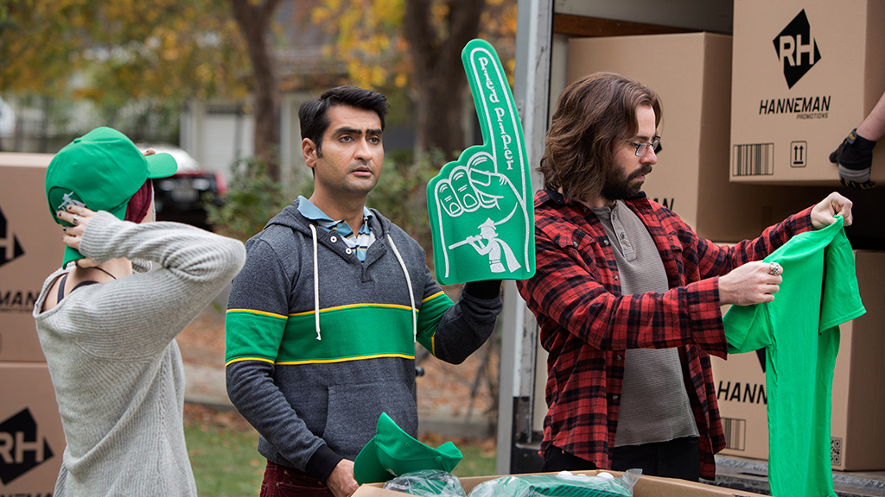
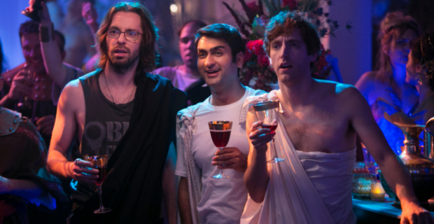
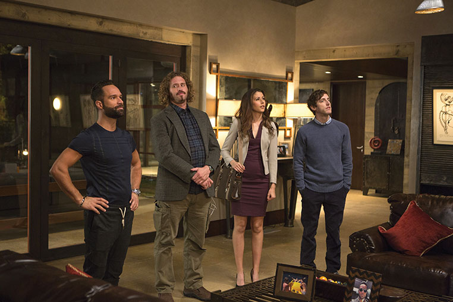
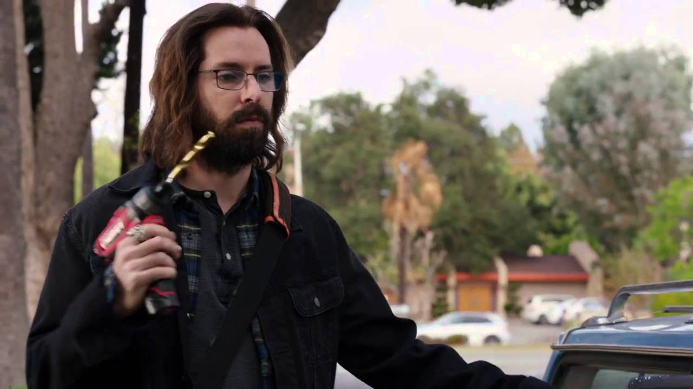

Silicon Valley
Silicon Valley is an American comedy television series created by Mike Judge, John Altschuler and Dave Krinsky. The series focuses on six young men who found a startup company in Silicon Valley.[1][2] The series premiered on April 6, 2014, on HBO.[3] The first season consisted of eight episodes.
Main Cast
Premise
In the high-tech gold rush of modern Silicon Valley, the people most qualified to succeed are the least capable of handling success. A comedy partially inspired by Mike Judge's own experiences as a Silicon Valley engineer in the late 1980s.
Episodes
Season 1(2015)
Richard Hendricks (Thomas Middleditch) is a shy, reclusive programmer who works at a large internet company called Hooli. He is also developing a music app called Pied Piper in a live-in startup business incubator run by entrepreneur Erlich Bachman (T. J. Miller). After a rocky post-TED elevator pitch of Pied Piper to venture capitalist Peter Gregory (Christopher Evan Welch), Hendricks also shows his work to a pair of programmers at Hooli who mock him.
Hooli works to reverse engineer Pied Piper's algorithm based on the version he demonstrated, developing a copycat product called Nucleus. Gregory and Belson later each learn that Hendricks has been slated to present Pied Piper at TechCrunch Disrupt, a competition for unfunded startups.
At the TechCrunch event, Bachman takes the lead in a dramatic onstage presentation of Pied Piper. However the presentation is cut short when one of the judges assaults Bachman for having adulterous sex with both his current and ex-wives. Pied Piper automatically advances to the final round as recompense for the assault on Bachman.
The team eventually retires to a hotel room, where Bachman nihilistically suggests "jerking off" every member of the audience, and the group launches into an engineering conversation about how to do that efficiently. The discussion sparks a sudden revelation in Hendricks, who spends the entire night coding.
The next morning, Hendricks takes the lead in making Pied Piper's final presentation. Having scrapped all of Pied Piper's other features overnight, Hendricks describes his new compression algorithm, and demonstrates it. Hendricks' algorithm strongly outperforms Nucleus and he is mobbed by eager investors.
Season 2
In the immediate aftermath of their TechCrunch Disrupt victory, multiple venture capital firms offer to finance Pied Piper's Series A round. However, while expressing interest, several venture capitalists criticize Hendricks' lack of perceived direction and to come back with a more coherent "vision". Bachman insists that this is a strategy to lower Pied Piper's valuation. He responds to each offer by insulting each venture capital firm.
One offer from the company End Frame in particular is revealed to be a scam to steal trade secrets from Pied Piper developers. Peter Gregory dies while on vacation and is replaced by Laurie Bream (Suzanne Cryer) to run Raviga Capital. Bream gives Richard the highest offer of all the VC firms: 20% equity at a $100 million valuation.
The Pied Piper team confronts End Frame about End Frame's theft of intellectual property, and during the visit End Frame brags that their large sales department will allow them to be successful despite their technical inferiority. Hanneman arranges for End Frame to buy Pied Piper, but Richard rejects the deal.
Meanwhile, the museum providing the video of the condor egg decides to remove the camera due to low viewership numbers, but the technician taking it down falls and becomes trapped with the camera in a ravine. The feed of the injured technician goes viral, forcing Gilfoyle, Dinesh, Jared and Bachman to scramble to keep their servers online.
However, due to the previous incidents with Intersite and Homicide, Raviga has little confidence in Pied Piper's leadership. As Pied Piper celebrates their arbitration victory, Richard is notified that the now Raviga-run board has voted to remove him from the CEO position.
Season 3
After failing to convince the board of directors to keep him on as Pied Piper CEO instead of demoting him to Chief Technology Officer, Richard threatens to quit and sue to regain his intellectual property. Richard meets with a company called Flutterbeam that wants to hire him as CTO. However, after being disappointed by their work, he rejects the offer and decides to stay with Pied Piper.
Meanwhile, at Hooli, Gavin Belson discovers that the now invalid employment contracts would allow him to fire affected employees without severance and take back unvested stock options. Belson fires the entire Nucleus team, and uses the profits from the reclaimed stock options to offer Big Head a $20 million severance package in exchange for non-disclosure and non-disparagement agreements.
After being removed as CEO, Gavin decides to go on a holiday to take his mind off everything. At the airport which hosts his private jet, he bumps into Jack Barker, the now-fired CEO of Pied Piper. They have a little chat, wherein Gavin incorporates Jack into his Hooli revival. Gavin now makes a new presentation in front of the board of directors.
Eventually their platform reaches a point where they invite friends in the industry to test it, to universally positive reviews. The only negative response is from Monica, who says that she just doesn't understand how it works and that it seems too "engineered". She encourages Richard to trust his own instincts and release the platform if he feels it is ready, which he does.
Richard soon discovers the deception and confronts Jared about it, and they agree to keep the secret to themselves, but Dinesh and Gilfoyle soon realize what is happening. Dinesh gives Richard a scrambling program which would hide the evidence in the case of an audit by future investors or regulators, which Richard seems prepared to use.
The original team (along with Monica, who was fired from Raviga for standing up to Laurie), having regained control, prepares to pivot again, this time to become a video chat company, based on the sudden popularity of Dinesh's video chat application.